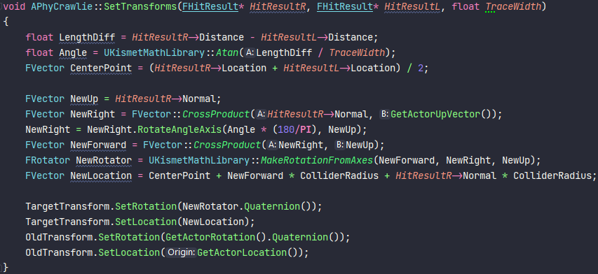
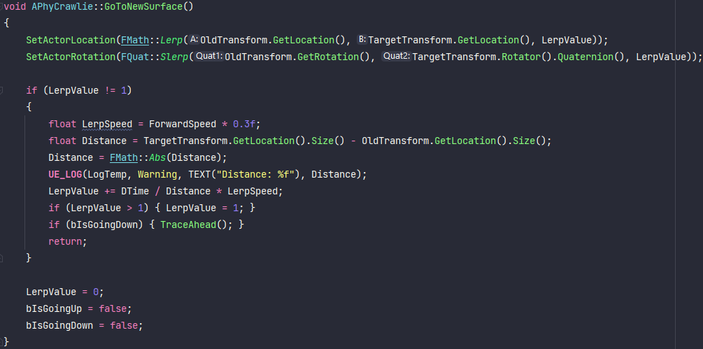
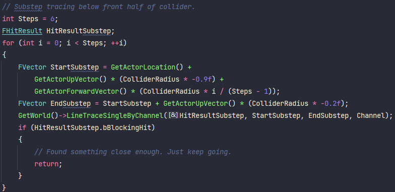

PC game
Unreal/C++
Futuregames school project
Team size 6
Programmers 3
Link to these files on GitHub
A first person puzzle-ish game set in a mostly dark, kinda creepy space station. The player has the ability to alter gravity of itself and other objects, and must use these abilities to progress the maps. My main focus was making "bugs" that crawl around on the different surfaces in the rooms.
The first iteration was an object that could randomly traverse the floors, walls, ceilings and objects of
the simple test map we had. I used a combination of different ray casts to keep track of the surface the
creature was on, and if a wall or a void was coming up ahead. Basically, for every tick it traced forward
and down. If there was a hit ahead it teleported there. If there was no hit below it traced further
down/back to find and teleport to the surface below.
It got kinda interesting though when we got the proper walls and such, which has lots of small details like
protrusions and grooves. So I had to make a decision between either having some sort of flatter nav meshes
for the creature, or making the sensing and navigation more detailed.
We were leaning towards just having these creatures as decorations and not as enemies. So their "accuracy"
wasn't the highest of priorities, but the project as a whole was coming along quite well, so I had the
chance to give them the time they needed.
So my goal became to make the movement as good as possible, traversing all the details of our rooms.
I went through quite a few ways trying to get all the angles of the creature to line up with an obstacle or
void ahead, regardless the horizontal and vertical angles.
The first trace is ahead, near the bottom of the player. If that's not a hit, it goes on to trace at it's
center height. If that's not a hit either, it traces near the top of the player. If any of these do generate
a hit I set up the info about the target location and rotation. Every trace is actually a left and a right
one, I use the difference in length of these to figure out the creature's vertical angle of approach.

Once the new position and rotation is figured out, I use lerp and slerp to transition the new location and
rotation. The speed of the lerp/slerp of course take into consideration the current walkspeed, but also the
distance to the new position since this will be different depending on the angles between the creature and
the new position.

If there is no obstacle ahead, it starts a chain of traces downwards to make sure it is still grounded.
If there is a surface right below the center of the creature I just early out of the floor tracing.
If not, it does a number of traces for floor surface under the front half of itself. This is so it doesn't
correct for a small crack in the floor.

If it still cannot find a floor surface it will trace starting from the bottom of the player going down and
back. This way I can pickup a surface leaning down, up to angle of around 120 degrees from straight forward.
In the rare case this doesn't return a hit either, this means the creature is on a very thin object or on a
sharp edge of an object. So I do a trace from a little bit below the creature and going back/up.
Movement after a hit in these last two cases is handled pretty much the same as a hit ahead.
In a couple of places we used some invisible bug walls to limit the creatures area of movement so they
don't run off to other rooms etc.